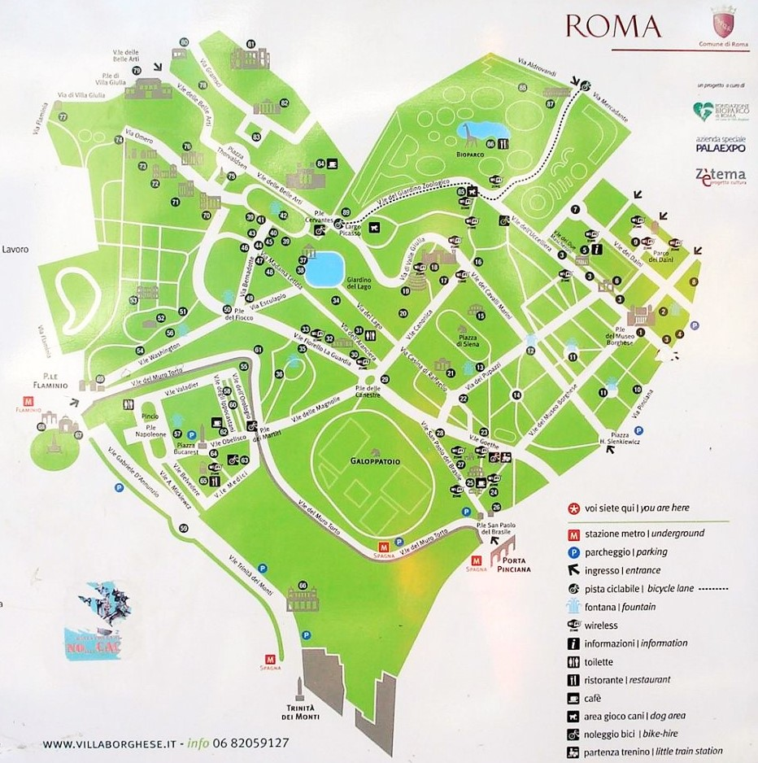

Фокус
Телефон 8(800)333-30-30
Телефон 8(800)333-30-30
Дата и время сьемки: 31.12.2022 10:00
Количество свободных зон в локации: 15

Дата и время сьемки: 31.12.2022 10:00
Количество свободных зон в локации: 16

Дата и время сьемки: 31.12.2022 10:00
Количество свободных зон в локации: 10
